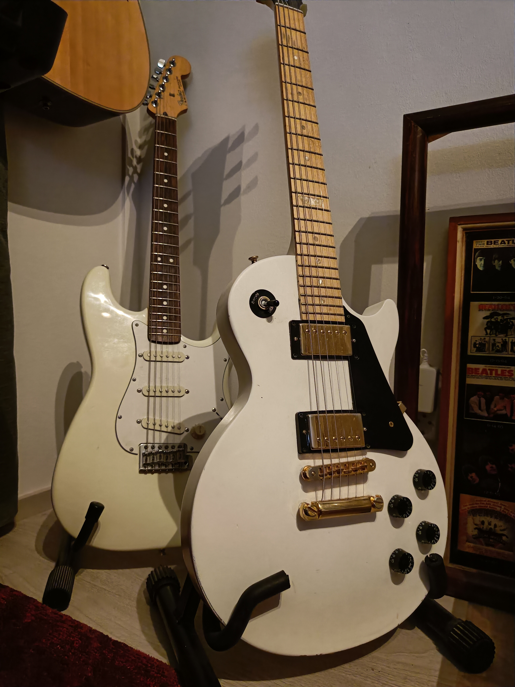
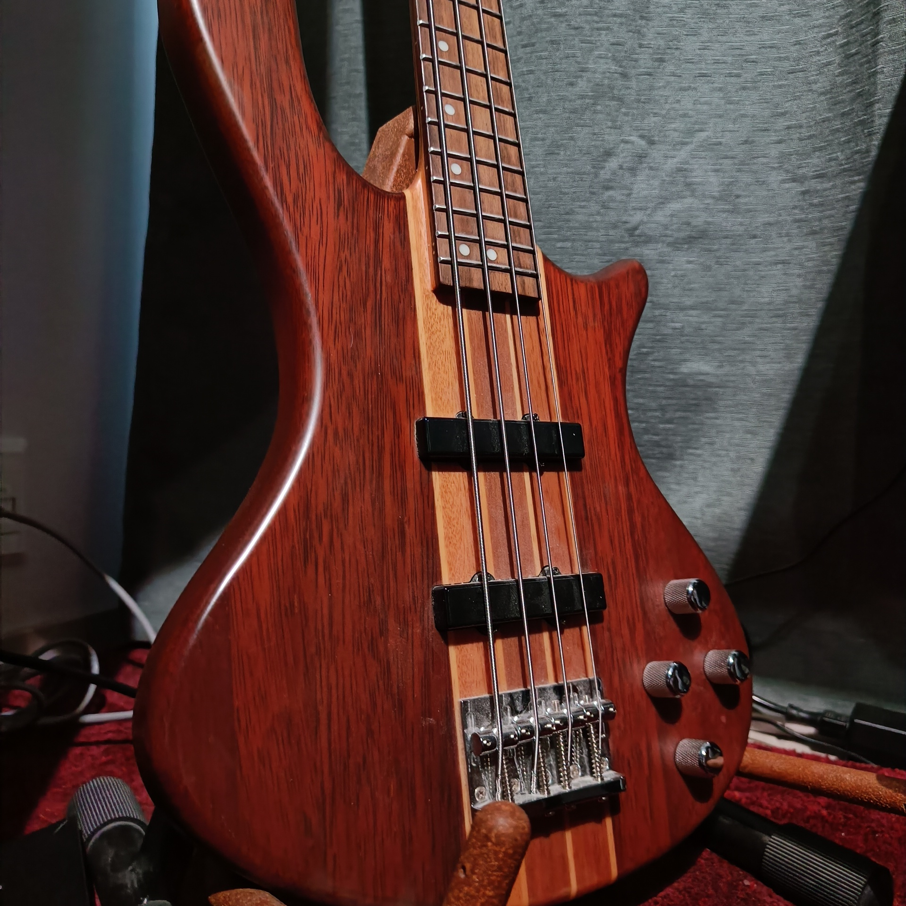
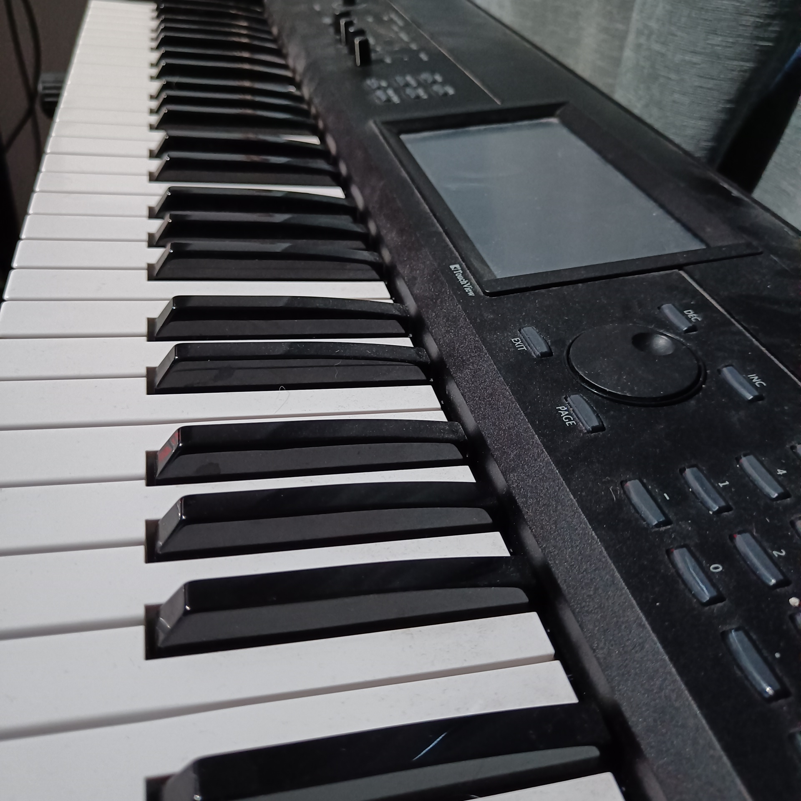
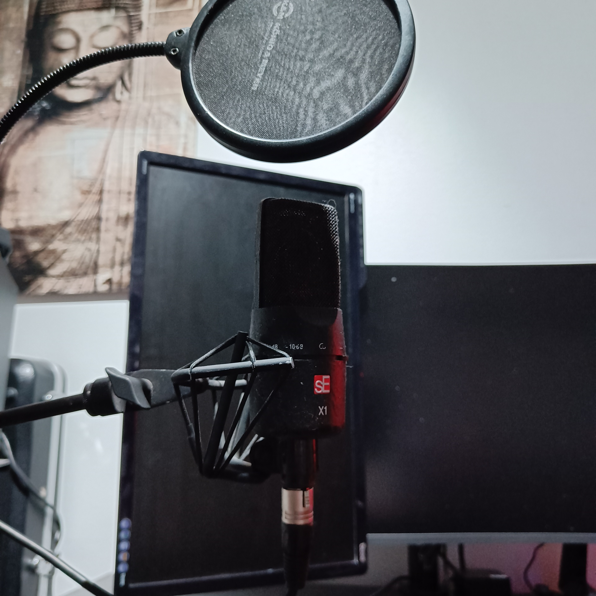
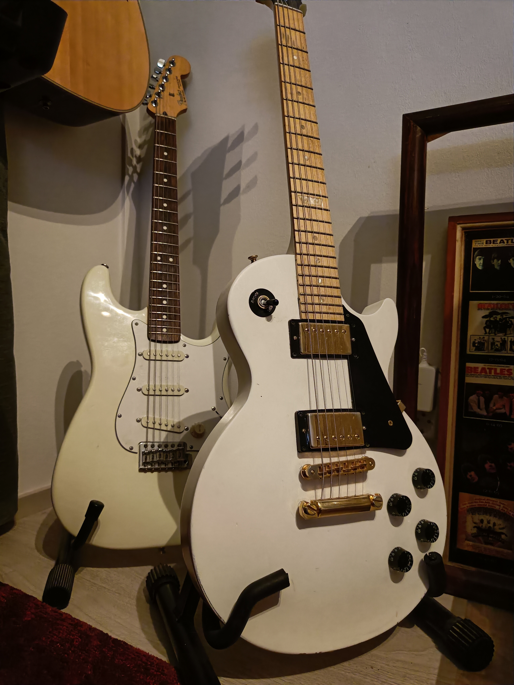
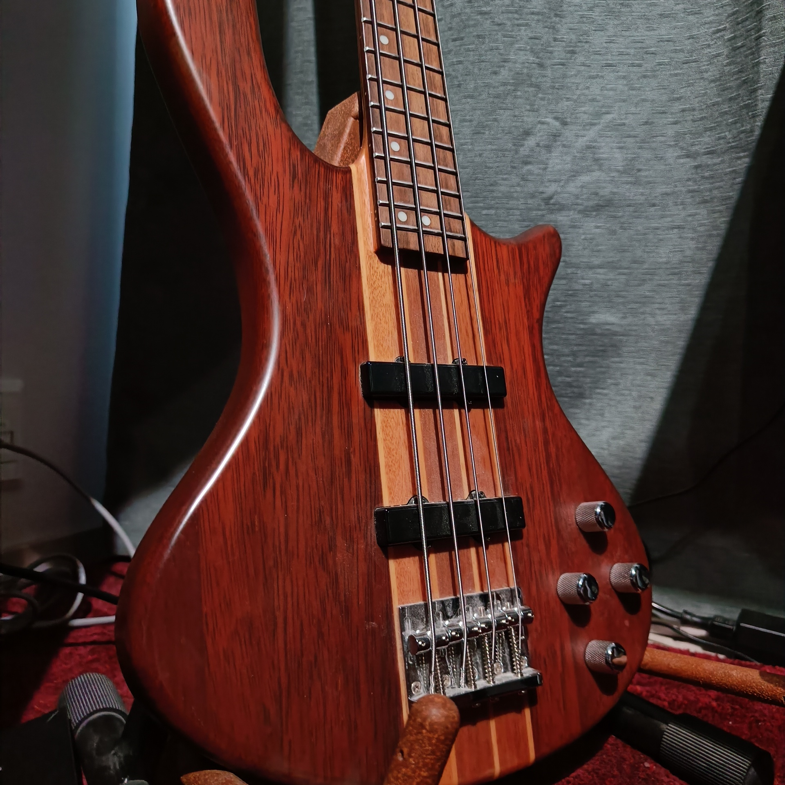
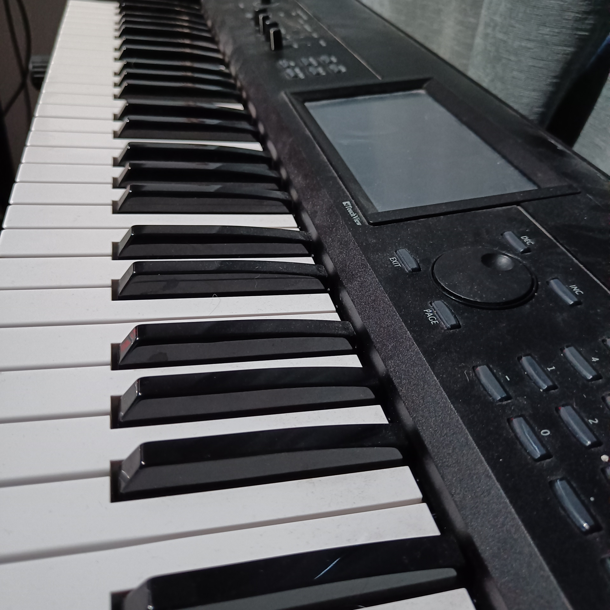
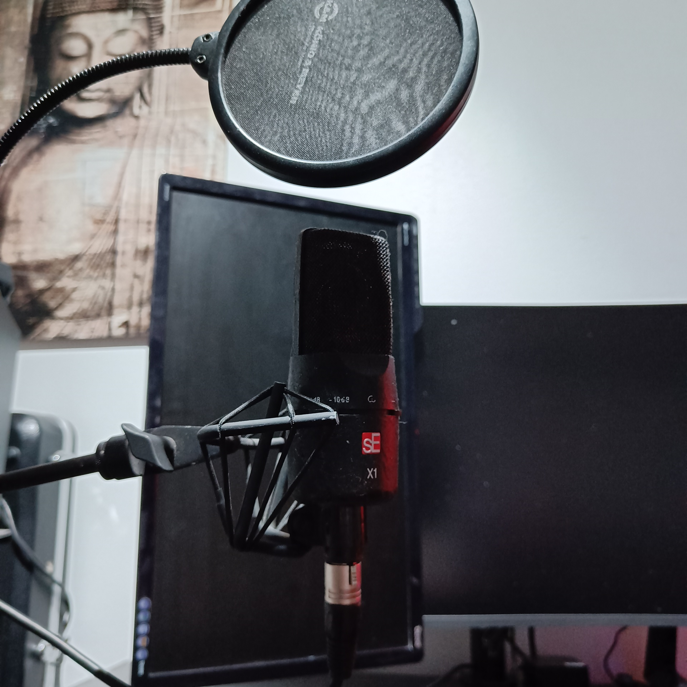
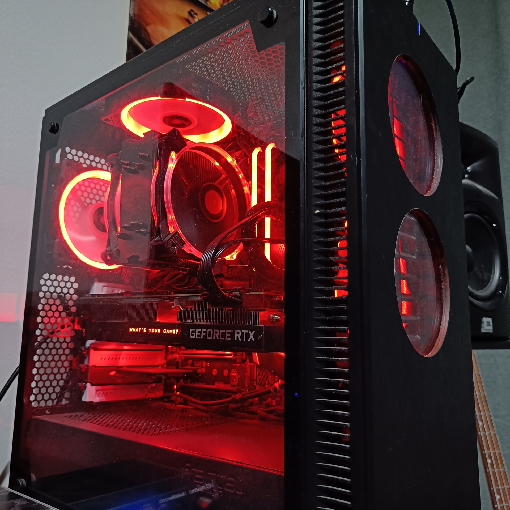
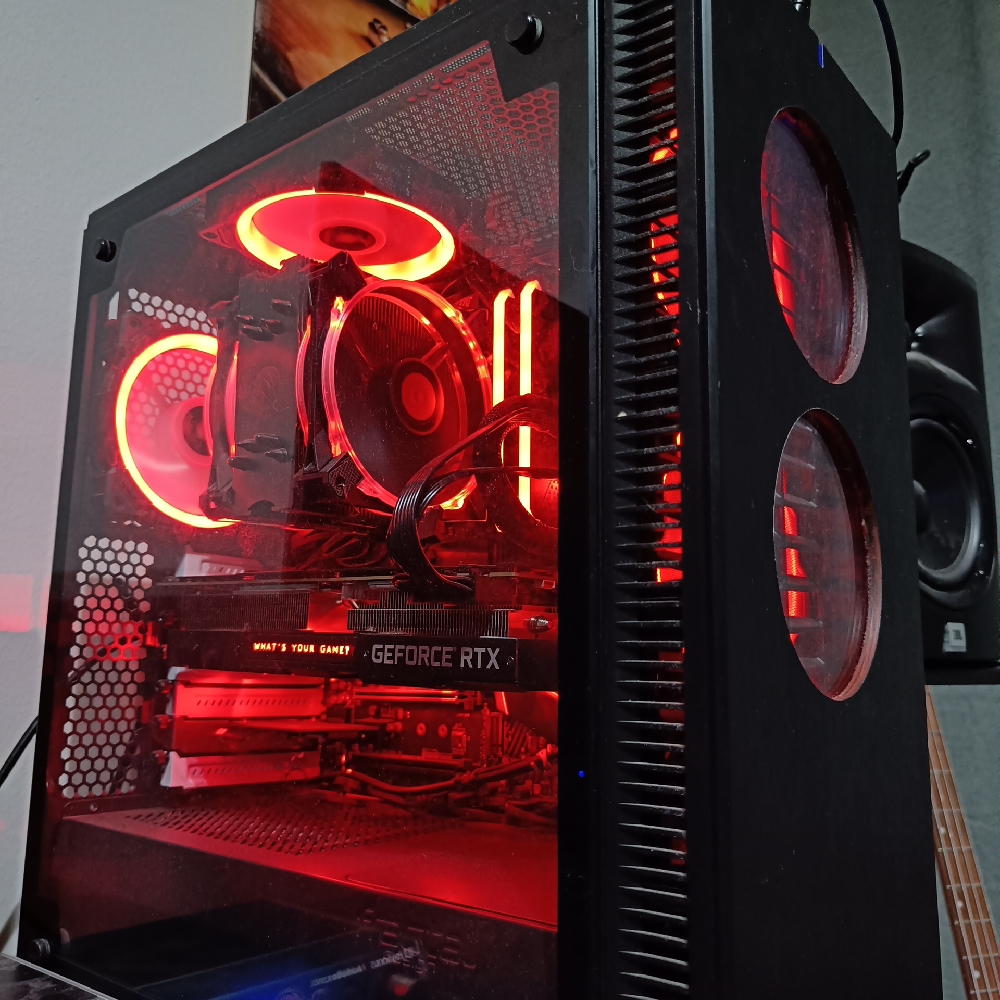

How To Get Started
Producing your own music at home is nowadays easier than ever before. Maybe the biggest reason for that is that music production mostly happens with digital measures instead of doing things analogically, how they were used to.
In this page, I will point out some essential things to set up your own music studio, from gear to room acoustics.
Essential Equipment
Here is a list of equipment you need to get started with home studio:
- A computer
You need a computer to record and mix your music. Whether it's a desktop or a laptop, the choice is yours to make. Desktop pc:s tend to be more powerful and have more connection ports, but laptops are more quiet and more portable if you are recording on the go.
You will also need to install a DAW(Digital Audio Workstation) to your computer.
- Microphone
Microphone is a must have if you want to record vocals or acoustic instruments. You can also mic up guitar or bass amp if you have one. There's mainly two kinds of microphones, condenser and dynamic. Condenser mics capture sound waves from longer distance than dynamic mics.
- Headphones
If you have difficulties choosing between monitor speakers and headphones, i'd say go with the headphones. If you are recording through microhone, it would pick up the noise from the speakers. Later on, you will definately need both to analyze the sound of the mix better.
- Audio interface
You'll need an audio interface in order to get the audio signal to your computer and DAW. They usually come with 2 or more input ports, in which you plug your instrument or microphone. The audio interface itself usually uses a usb or firewire connection to computer.
My Home Studio
I have a home studio setup in one of our bedrooms. I use this space for all my work, not just music. I am studying programming so the same space works fine for that too. One important thing that is missing from my studio is decent acoustic treatment In order to improve the acoustics of the room, I have planned to put acoustic panels to front and back walls and bass traps to the corners of the walls.
 







 


List of some my equipment
- Fender Stratocaster
- Korg Krome
- SE X1 Condenser mic
- JBL Studio monitors
- Presonus VSL22
- AKG 240 Studio